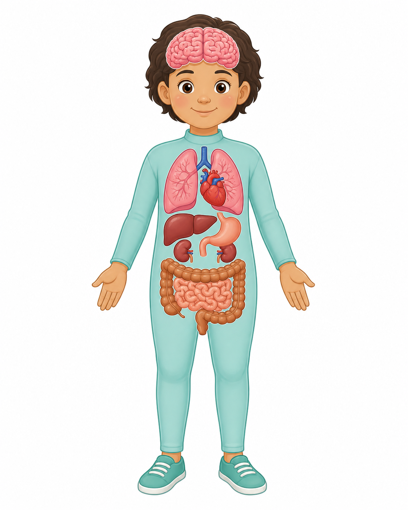

MAPA ANATÓMICO INTERACTIVO
Explora los órganos del cuerpo
Toca un órgano en su posición para conocer dónde está, qué hace y por qué es importante.
0/8órganos descubiertos
VISTA FRONTAL
Tu izquierda →Posiciones anatómicas aproximadas

En una vista frontal, el lado izquierdo de la persona aparece a tu derecha.
LOS 8 ÓRGANOS
Ninguno seleccionadoTambién puedes tocarlos aquí
Usar el dedo como puntero con la cámara
☝ Activa la cámara y ubícate con la silueta
La ilustración translúcida y los círculos te ayudarán a localizar cada órgano con el índice.